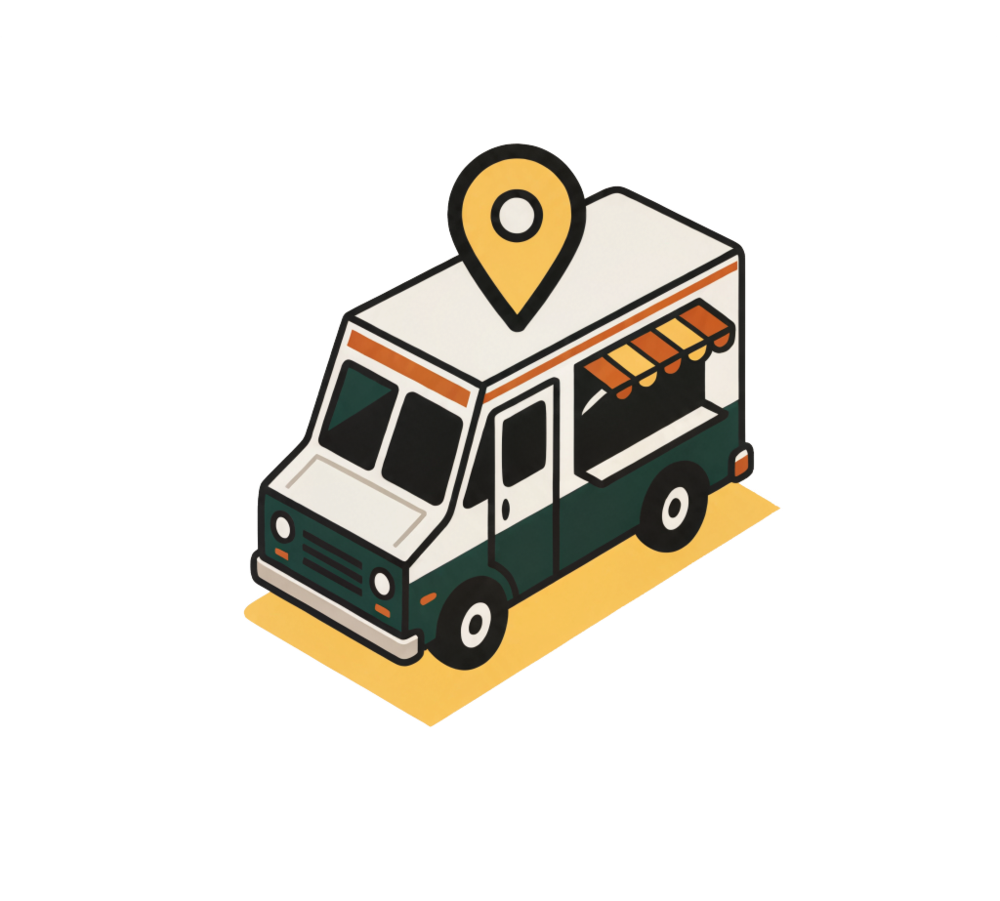
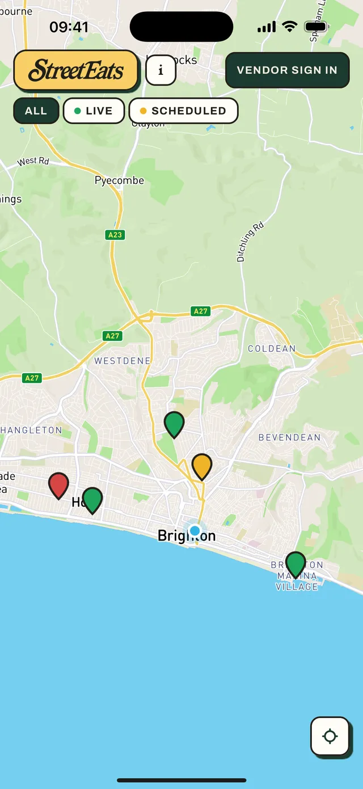
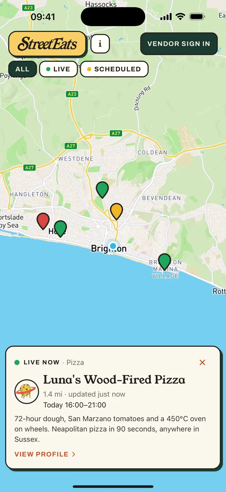
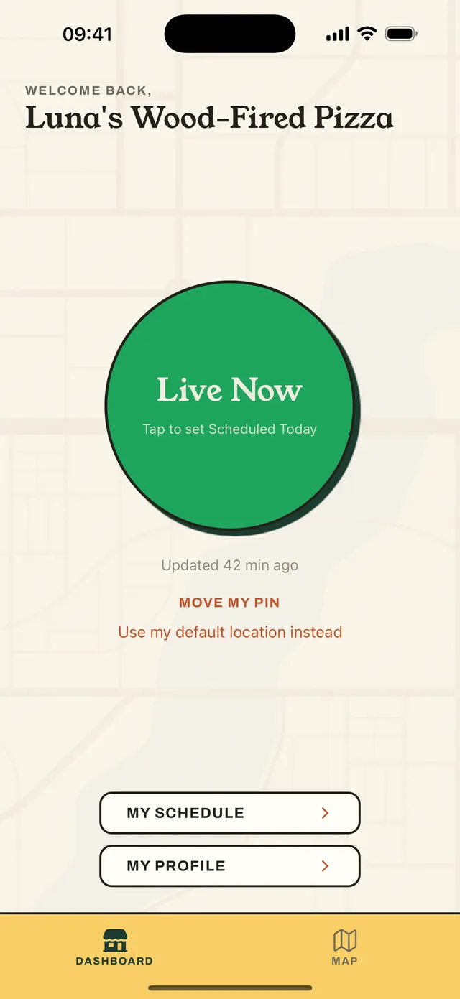

See what's open around you.
StreetEats is a live map of street food vendors, made for the parts of the UK the big apps forget. Vans and market stalls flip themselves "live" the moment they start trading — so a green pin means open right now, at that exact spot. Not "usually there on Fridays".
How the map works
Four pins tell you everything.
Straight from the app
The map in your hand.



For hungry people 🍔
- Open the app, see everything trading within 12 miles — built for rural areas, not just cities.
- Tap a pin for who's cooking, what they serve, today's hours and how far away they are.
- Check a vendor's profile for their contact info and upcoming appearances.
- No account, no sign-up, no ads — and no more searching social media for timetables.
Free forever. Just open the app and look.
For vendors 🚚
- One big button: go Live when you open, Closed when you're done. Ten seconds, one thumb.
- Your pin moves with you — trade wherever the day takes you.
- Reach customers up to 12 miles away, not just passing trade.
- Schedule your week so regulars know where you'll be.
- See who else is trading nearby and scout new pitches.
We're onboarding founding vendors now — free during our launch phase, and iPhone-first (Android on the way).
Beta full or link not working? Email streeteats.support@gmail.com and we'll add you to the next wave.
Starting in the South East.
StreetEats is launching with a hand-picked set of vendors across Sussex and the South East of England, and growing from there. Our mission: become the UK's go-to street food directory — one honest green pin at a time.